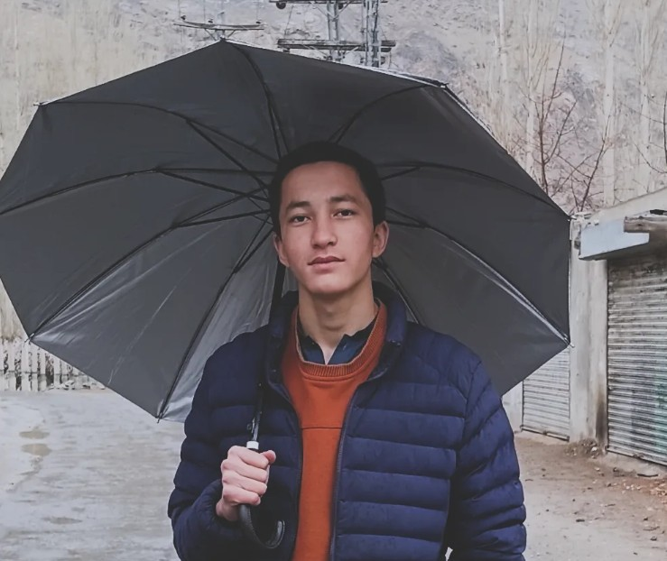

Student | Future Technology Enthusiast
I am Mateen Muslim, a motivated and ambitious student currently studying in 11th Class at MidCity Educators, Skardu. I am passionate about learning new skills, especially in technology and communication. I aim to build a successful career by continuously improving myself and gaining practical experience.
I am a motivated and curious student who is always eager to learn new things and improve myself. I have a positive mindset and enjoy exploring opportunities that help me grow both personally and academically. I am hardworking, responsible, and determined to achieve my goals.
My personality reflects confidence, creativity, and a willingness to face challenges. I like helping others, learning new skills, and thinking about innovative ideas. I believe in continuous learning and self-development.
My goal is to build a successful career by gaining valuable skills, especially in technology and communication. I want to become independent, make a positive impact in society, and achieve excellence in everything I do.
My goal is to build a strong foundation in technology and communication. I want to gain practical experience, develop professional skills, and become independent. I aim to make a positive contribution to society and achieve excellence in my future career.